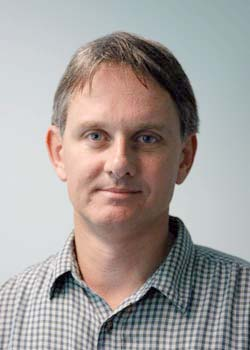
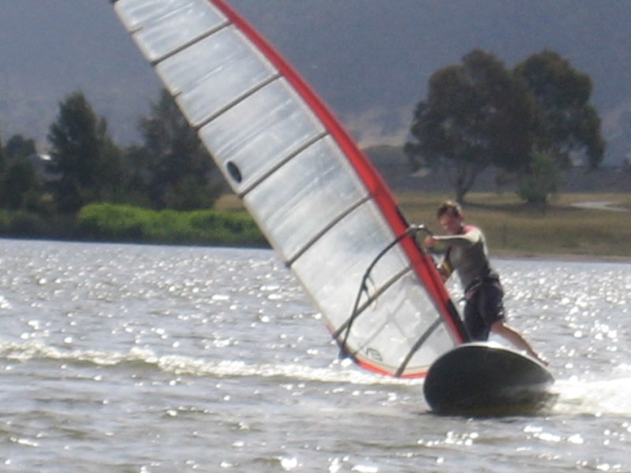

Prof Rod Kennedy
BE (Hons 1) ME PhD FIEEE
about me
I'm a Professor in the ANU College of Engineering and Computer Science at The Australian National University in Canberra.
The ANU is ranked in the top 50-100 universities worldwide in research.
In my research, I work with a number of PhD students and colleagues on various research topics including signals and systems, wireless and mobile communications, physical channel modeling, information theory and acoustic signal processing. More recently my interests have included more life science related research especially related to medical image processing and biological ion channel modeling.
track record
In the past I have won a number of university prizes in engineering and mathematics, received a University Medal at UNSW and the Australian Telecommunications
 and Electronics Research Board Medal, held a Queen Elizabeth II Fellowship and made grade of IEEE Fellow. I've (co)-supervised towards 40 PhD students and collaborated on many papers (around 320). For more details, follow the links to the left. Research is a distillation of major works with a more complete list of publications to be found in my Curriculum Vitae.
and Electronics Research Board Medal, held a Queen Elizabeth II Fellowship and made grade of IEEE Fellow. I've (co)-supervised towards 40 PhD students and collaborated on many papers (around 320). For more details, follow the links to the left. Research is a distillation of major works with a more complete list of publications to be found in my Curriculum Vitae.
In an earlier career phase, in the 1980's, I worked on the Australia Telescope project (Radio Astronomy) at CSIRO where I busied myself with: surveying for the compact array stations, field RF interference measurements, radio telescope control system design (Masters degree) and RF analysis of shaped cassegrain reflector systems. Despite this the telescope works even today.
current collaborators
For current PhD student collaborators, follow PhD Study. Current research collaborators are listed here:
other
 Sport interests include windsurfing, woodwork, squash. Founding Director of WaveHarmonics Pty Ltd.
Last Updated: 7 July 2008.
Copyright © 2007-2008 Rod Kennedy. Web template based on design by Andreas Viklund.